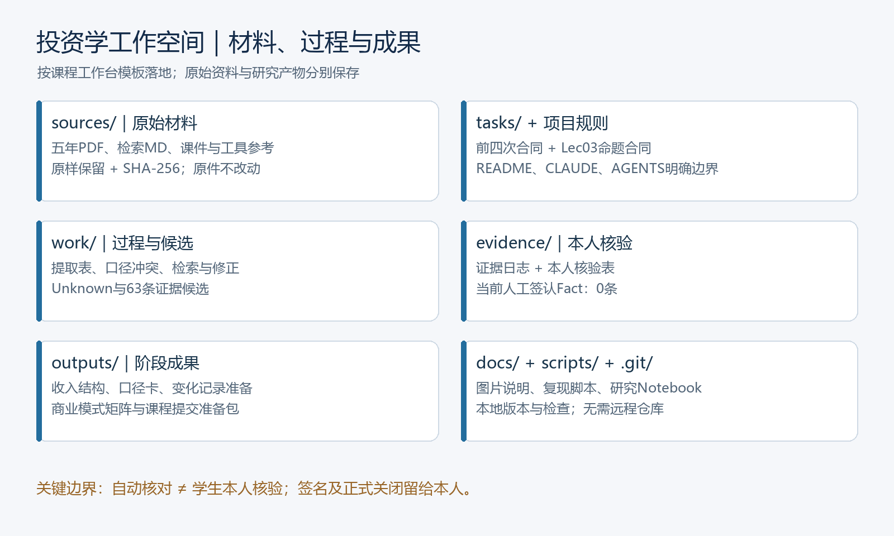

本版研究意见已采纳 · 2026-10-13
公司高毛利和增收表现保持，2024增收更多体现销量扩张；直销组合均价及21年飞天散瓶现货价走弱。品牌支撑解释暂定保留，全面持续增强缺乏充分支持。意见为Interpretation，证据缺口继续保留。
657页五份PDF全文读取
51条收入与成本候选
21组同口径分项合计匹配
2026-10-10：前四次复核与授权签署完成，第五次内容及签署完成；两份新稿各保留一项新增学生亲查待补。执行/复核均lxy，同人身份已注明。有效性请查当前核验入口；不把签名当新事实确认。

人工核验进度
当前有效Fact为33条；Unknown为52条；已撤回0条；需重新核验0条。共85条候选。 日期自动按Asia/Shanghai记录。合同验收、复核人与正式签署另行完成。